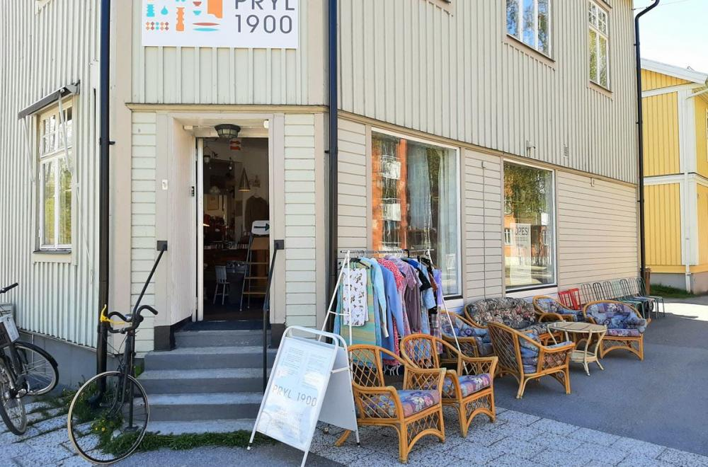

Pryl 1900 i centrala Umeå köper och säljer utvalda föremål av god kvalitet och design samt kul kuriosa. Butiken har funnits sedan 2013 och erbjuder föremål från alla tider, såväl antikt som retro men även relativt nyproducerade saker. Loppis, second hand, retrobutik eller antikaffär – kalla det vad du vill – här finns i alla fall en massa kul grejer!
"Min stora passion är att hela tiden lära mig något nytt om äldre föremål, träffa nya intressanta människor och återvinna så mycket som det bara går. I och med att jag till största delen står själv i butiken har jag under årens lopp samlat på mig mycket kunskap och kan ge dig som kund en trygg och bra affär. Jag driver verksamheten på egen hand men får som tur var god hjälp av kamrater med att exempelvis bära in möbler, stajla om olika rum och skriva skyltar." - Mikael Söderlind